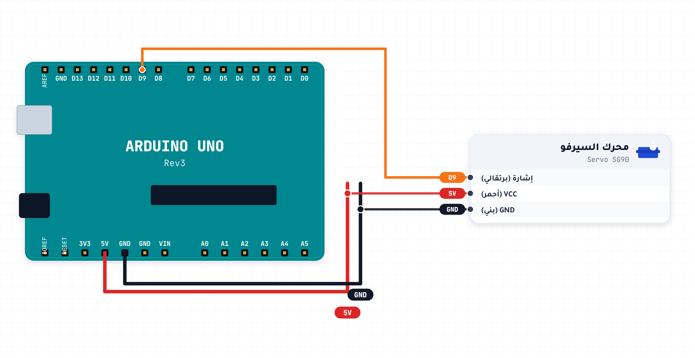
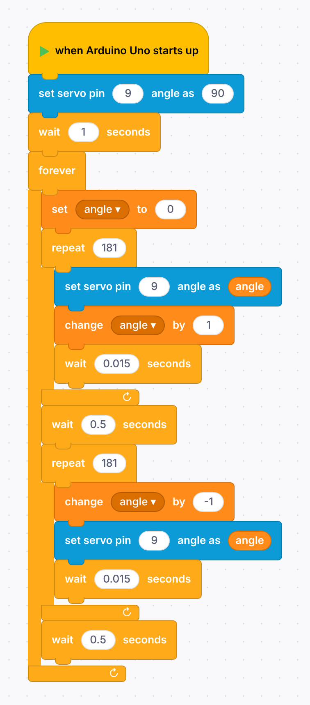

▶فيديو الشرح
نحرك ذراع السيرفو بدقة من 0 إلى 180 درجة ثم نعيده بسلاسة.
1المكونات
ARDUINO UNOboardمحرك السيرفوServo SG90أسلاك توصيلJumper Wiresلوحة تجاربBreadboard
2مخطط التوصيل

اضغط على المخطط لتكبيره · نسخة SVG عالية الدقة
| القطعة | الطرف | يوصل إلى |
|---|---|---|
| محرك السيرفو | إشارة (برتقالي) | D9 |
| محرك السيرفو | VCC (أحمر) | 5V |
| محرك السيرفو | GND (بني) | GND |
3الكود
المكتبات المطلوبة (من Arduino IDE ← Sketch ← Include Library ← Manage Libraries):
- Servo (مدمجة مع Arduino IDE)
/* المشروع 3: التحكم في محرك السيرفو (Servo Motor) كتاب: 38 مشروع في شهر — لؤي النصري (@robotlouay) التوصيل (SG90): - السلك البني/الأسود ← GND - السلك الأحمر ← 5V - السلك البرتقالي/الأصفر (الإشارة) ← Pin 9 */ #include <Servo.h> Servo myServo; // كائن يمثل المحرك const int SERVO_PIN = 9; const int STEP_DELAY = 15; // كلما زادت القيمة أصبحت الحركة أبطأ void setup() { myServo.attach(SERVO_PIN); // ربط المحرك بالمنفذ 9 myServo.write(90); // البدء من المنتصف delay(1000); } void loop() { // من 0 إلى 180 درجة for (int angle = 0; angle <= 180; angle++) { myServo.write(angle); delay(STEP_DELAY); } delay(500); // العودة من 180 إلى 0 درجة for (int angle = 180; angle >= 0; angle--) { myServo.write(angle); delay(STEP_DELAY); } delay(500); }
🧩 mBlock 5: اختر الجهاز Arduino Uno ثم وضع Upload، وأنشئ المتغيرات المستعملة من فئة Variables.
نفس منطق كود Arduino IDE مكتوباً بالبلوكات.
نفس منطق كود Arduino IDE مكتوباً بالبلوكات.


4كيف يعمل؟
- مكتبة Servo.h تنشئ كائناً للمحرك
- attach(9) تربطه بالمنفذ 9
- حلقة for تزيد الزاوية درجة بدرجة
- حلقة ثانية تعيده إلى 0°
⚠ قبل توصيل الكهرباء: راجع كل سلك مع الجدول أعلاه، وتأكد من عدم وجود تماس بين 5V و GND. اختر اللوحة والمنفذ الصحيحين من قائمة Tools في Arduino IDE.